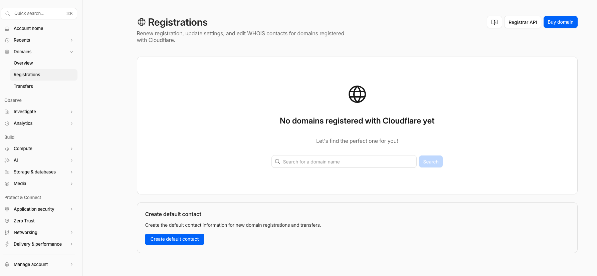
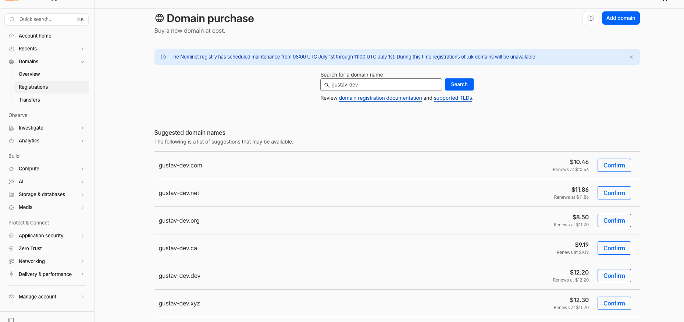
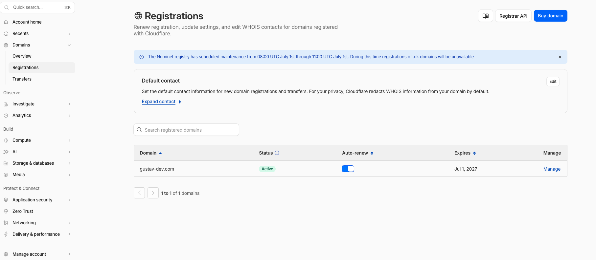
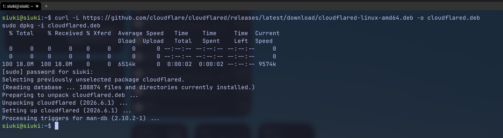
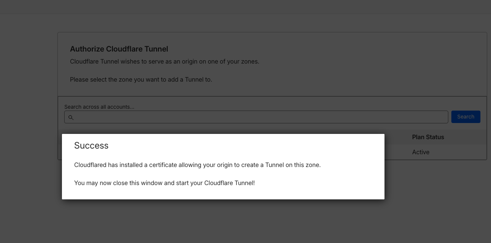
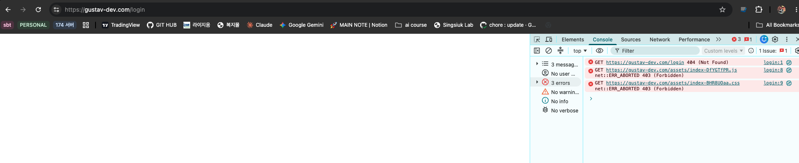
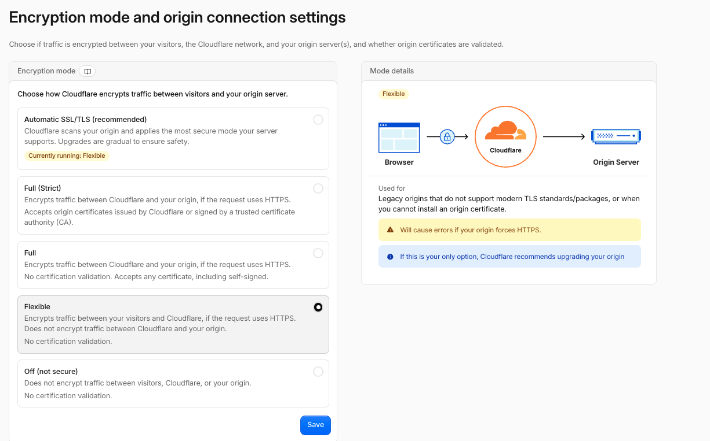

집 공유기 설정을 건드리지 않고 Cloudflare Tunnel(cloudflared)로 홈서버 Spring Boot 앱을 외부에 공개한 기록. CORS / WebSocket 403 트러블슈팅까지 포함.
집 공유기에서 포트포워딩을 설정하면 외부 인터넷 → 내부 서버로 직접 inbound 접근이 가능해진다. 하지만 보안 취약점이 생기고, ISP에 따라 외부 IP가 수시로 바뀌거나 아예 막혀 있는 경우도 있다.
Cloudflare Tunnel이 해결하는 방식
Cloudflare Tunnel(구 Argo Tunnel)은 서버가 Cloudflare로 outbound 연결을 먼저 맺는 구조다. 외부 사용자 요청은 Cloudflare 엣지를 통해 그 tunnel로 역방향 전달된다. 공유기 설정이나 방화벽 인바운드 규칙을 건드릴 필요가 없다.
| 방식 | 공유기 설정 | 보안 | 고정 IP 필요 |
|---|---|---|---|
| 포트포워딩 | 필요 | 취약 (포트 노출) | 필요 |
| Cloudflare Tunnel | 불필요 | Cloudflare가 앞단 차단 | 불필요 |
전체 흐름
DNS 관리를 Cloudflare로 이전하거나, Cloudflare Registrar에서 직접 구매
공식 .deb 패키지 설치 — Ubuntu/Debian 기준
cloudflared tunnel login / create 로 자격증명 발급
어떤 도메인을 어떤 로컬 포트로 연결할지 정의
서버 재부팅 후에도 자동으로 tunnel이 올라오도록 설정
Spring Boot는 Origin 헤더를 검증하므로 Cloudflare 도메인 추가 필요
Cloudflare Registrar(dash.cloudflare.com → Domains → Registrations)에서 도메인을 구매하면
DNS nameserver가 자동으로 Cloudflare로 설정되어 추가 작업이 없다.
기존 도메인을 다른 레지스트라에서 구매했다면 Cloudflare로 Transfer하거나 nameserver를 Cloudflare NS로 변경해야 한다.
등록 전 — 빈 상태

처음 Registrations 진입 시 — No domains registered
도메인 검색 및 구매

Domain purchase — "gustav-dev" 검색 결과 및 가격
등록 확인
Registrations 목록에 도메인이 Active 상태로 보이면 완료.
Auto-renew 켜두는 것을 권장한다.

gustav-dev.com Active 상태 확인 — Expires Jul 1, 2027
공식 GitHub Releases에서 .deb 패키지를 내려받아 설치한다.
패키지 매니저 등록 없이 직접 설치하는 방식이라 폐쇄망에서도 .deb 파일만 옮기면 동일하게 사용할 수 있다.
curl -L https://github.com/cloudflare/cloudflared/releases/latest/download/cloudflared-linux-amd64.deb \
-o cloudflared.deb
sudo dpkg -i cloudflared.deb
cloudflared .deb 설치 완료 — version 2026.6.1
설치 확인
cloudflared --version
# cloudflared version 2026.x.x.rpm 패키지를 사용한다.
cloudflared-linux-amd64.rpm 으로 파일명만 바꿔서 sudo rpm -i cloudflared.rpm 으로 설치.
아래 명령어를 실행하면 브라우저가 열리며 Cloudflare 로그인 화면이 뜬다. 로그인 후 연결할 zone(도메인)을 선택하면 자격증명 파일이 홈 디렉토리에 저장된다.
cloudflared tunnel login
# 브라우저 열림 -> Cloudflare 로그인 -> zone 선택 -> Success 메시지
# ~/.cloudflared/cert.pem 생성됨
tunnel login 성공 — "You may now close this window and start your Cloudflare Tunnel!"
터널 생성
터널 이름은 앱/프로젝트를 식별하는 임의의 문자열이다.
생성하면 UUID 기반 자격증명 파일(~/.cloudflared/<UUID>.json)이 생성된다.
cloudflared tunnel create my-app
# Tunnel credentials written to /home/siuki/.cloudflared/<UUID>.json
# Created tunnel my-app with id <UUID>터널 목록 확인
cloudflared tunnel list
# NAME ID CREATED
# my-app xxxxxxxx-xxxx-xxxx-xxxx-xxxxxxxxxxxx 2026-xx-xx
cloudflared가 참조할 설정 파일이다.
tunnel에는 생성된 UUID를, credentials-file에는 절대 경로를 정확히 입력해야 한다.
/root/... 로 쓰는 경우가 있다.
실제 사용자 홈 디렉토리(/home/사용자명/)를 확인하고 입력할 것.
tunnel: <UUID>
credentials-file: /home/siuki/.cloudflared/<UUID>.json
ingress:
- hostname: gustav-dev.com
service: http://localhost:8080
- service: http_status:404
ingress 마지막에 반드시 catch-all 규칙(http_status:404)을 추가해야 한다.
없으면 cloudflared가 시작 시 오류를 낸다.
서브도메인 추가 (선택)
여러 서비스를 한 터널에서 처리하려면 ingress에 항목을 추가한다.
ingress:
- hostname: api.gustav-dev.com
service: http://localhost:8080
- hostname: gustav-dev.com
service: http://localhost:8080
- service: http_status:404DNS CNAME 자동 등록
아래 명령어 한 줄로 Cloudflare DNS에 CNAME 레코드가 자동 생성된다.
my-app은 터널 이름, 두 번째 인수는 공개할 도메인이다.
cloudflared tunnel route dns my-app gustav-dev.com
# 성공 시: Added CNAME record for gustav-dev.comgustav-dev.com CNAME -> <UUID>.cfargotunnel.com 으로 등록된다.
브라우저 요청이 Cloudflare 엣지로 가고, 엣지가 터널을 통해 홈서버로 전달한다.
서버 재부팅 후에도 자동으로 터널이 올라오도록 systemd 서비스로 등록한다. config 파일 경로를 명시적으로 지정해야 정상 인식된다.
sudo cloudflared --config /home/siuki/.cloudflared/config.yml service install
sudo systemctl enable cloudflared
sudo systemctl start cloudflared
sudo systemctl status cloudflaredsystemctl status cloudflared 출력에서 active (running) 과
"Connection established" 로그가 보이면 터널이 정상 동작 중이다.
테스트 실행 (서비스 미사용 시)
서비스 등록 전에 임시로 터널을 직접 실행해 동작을 확인할 수 있다.
cloudflared tunnel --config /home/siuki/.cloudflared/config.yml run my-app서비스 재시작 / 로그 확인
sudo systemctl restart cloudflared
sudo journalctl -u cloudflared -f
터널이 정상이고 Spring Boot 앱이 정상이어도, 브라우저 Network 탭에서
/assets/*.js, /assets/*.css 같은 정적 자원이 403을 반환하는 경우가 있다.
원인은 Cloudflare가 Origin: https://gustav-dev.com 헤더를 추가해 Spring Boot로 전달하는데,
Spring Boot CORS 필터가 허용하지 않은 Origin이라 차단하기 때문이다.

정적 자원 403 — /assets/*.js, /assets/*.css 모두 ERR_ABORTED 403
| 응답 헤더 | 의미 |
|---|---|
server: cloudflare | Cloudflare 엣지를 거쳐서 온 요청 |
vary: Origin | Origin 헤더에 따라 응답이 달라짐 = CORS 처리 중 |
cf-ray: ... | Cloudflare 요청 추적 ID — 직접 Spring Boot를 거쳤음을 확인 |
WebConfig.java — HTTP CORS 허용
Spring Boot CORS 설정에 Cloudflare 도메인을 추가한다.
allowedOrigins 에 https://도메인 을 추가하면 된다.
@Override
public void addCorsMappings(CorsRegistry registry) {
registry.addMapping("/**")
.allowedOrigins(
"http://localhost:3000",
"http://localhost:5173",
"https://gustav-dev.com" // 추가
)
.allowedMethods("GET", "POST", "PUT", "DELETE", "OPTIONS")
.allowCredentials(true);
}WebSocketConfig.java — WebSocket 허용
STOMP WebSocket 엔드포인트도 동일하게 Origin 검증을 한다.
setAllowedOrigins에 도메인을 추가하지 않으면
WebSocket connection to 'wss://gustav-dev.com/ws' failed 오류가 발생한다.
@Override
public void registerStompEndpoints(StompEndpointRegistry registry) {
registry.addEndpoint("/ws")
.setAllowedOrigins(
"http://localhost:5173",
"http://localhost:3000",
"https://gustav-dev.com" // 추가
);
}수정 후 재빌드 및 재배포
./gradlew bootJar
# 서버에서 jar 교체 후 재시작
sudo systemctl restart stock-appCloudflare 대시보드 → 해당 도메인 → SSL/TLS → Overview 에서 암호화 모드를 선택한다. Cloudflare Tunnel을 사용하는 경우 Flexible 모드로 설정하면 된다.
| 모드 | 브라우저-CF | CF-원서버 | Tunnel 적합성 |
|---|---|---|---|
| Off | HTTP | HTTP | 비권장 |
| Flexible | HTTPS | HTTP (암호화 없음) | 적합 (홈서버 HTTP) |
| Full | HTTPS | HTTPS (인증서 검증 없음) | 가능 (서버 인증서 필요) |
| Full (Strict) | HTTPS | HTTPS (CA 인증서 필수) | 추가 설정 필요 |

SSL/TLS Encryption mode — Flexible 선택 (홈서버 HTTP 그대로 사용)
자동 HTTPS 리다이렉트
SSL/TLS → Edge Certificates → "Always Use HTTPS"를 ON으로 설정하면
http://gustav-dev.com 접속 시 자동으로 https://로 리다이렉트된다.
트러블슈팅 체크리스트
| 증상 | 원인 | 해결 |
|---|---|---|
| 정적 자원(.js/.css) 403 | Spring Boot CORS가 Cloudflare Origin 차단 | WebConfig.java allowedOrigins에 도메인 추가 |
| wss:// WebSocket 연결 실패 | setAllowedOrigins에 도메인 없음 | WebSocketConfig.java setAllowedOrigins에 도메인 추가 |
| cloudflared 서비스 시작 실패 | config.yml 경로 오류 또는 credentials-file 경로 잘못됨 | 절대 경로 재확인, journalctl -u cloudflared 로그 확인 |
| 도메인 접속 불가 (Tunnel 정상인데) | DNS CNAME 미등록 | cloudflared tunnel route dns my-app 도메인 재실행 |